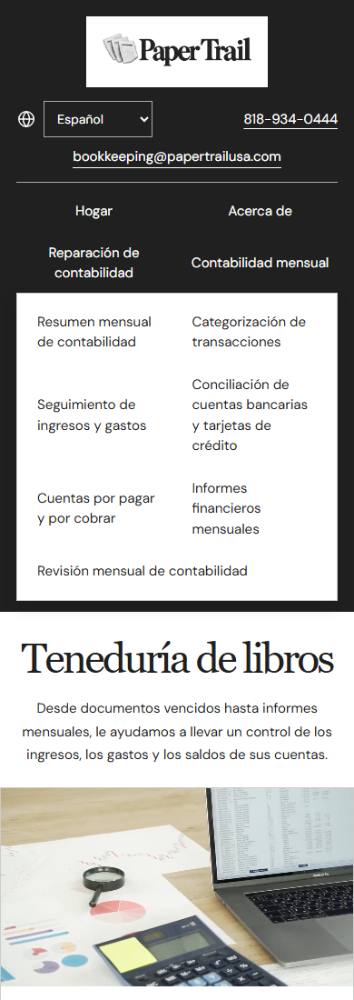
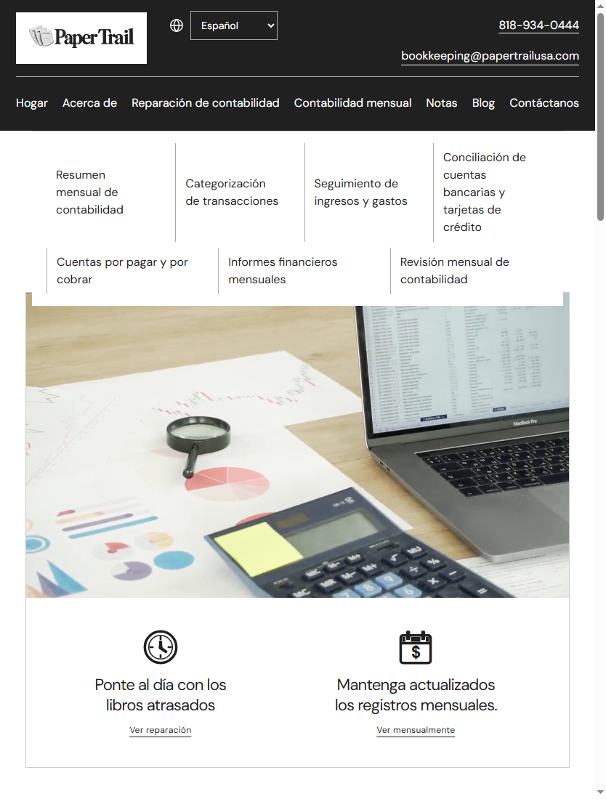
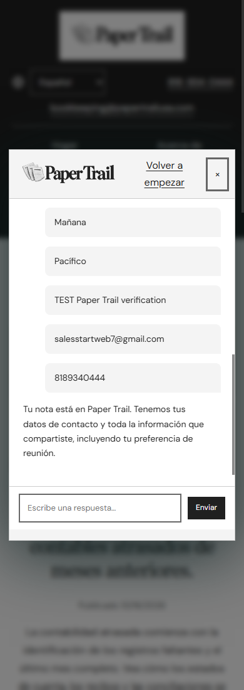
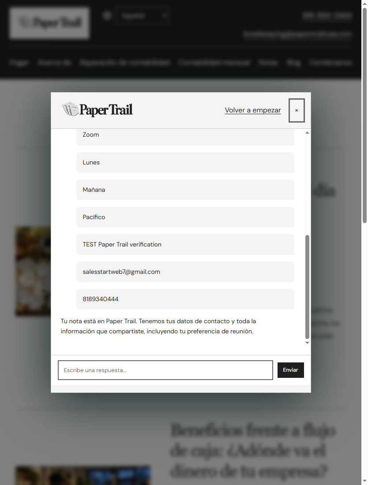
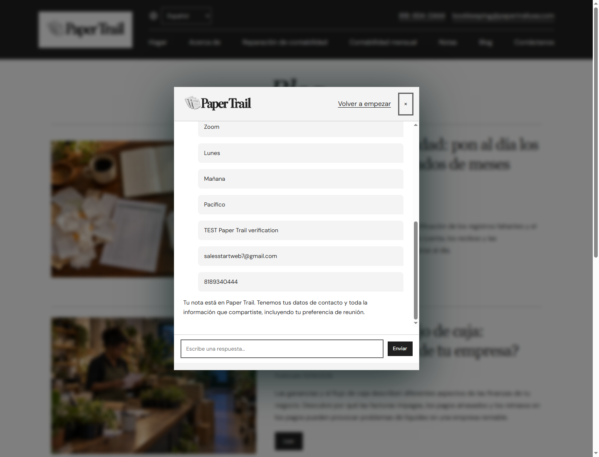
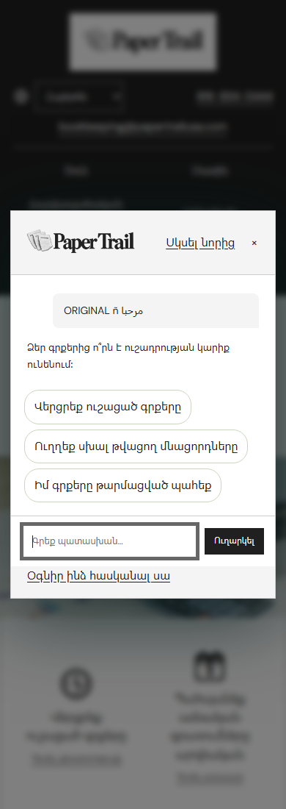

Owner review date: October 16, 2026. The 12 page instruction PDF was read completely and remains outside the website packages.
Not ready to describe as DNS only. HubSpot receipt not verified. Updated private preview deployment and receipt verification remain blocked. The screenshots and passing checks below are from the local build; no real form submission is claimed.
All four additional form labels were found in permanent saved Google results. Zero new Paper Trail translation requests were needed, so the approved 160 character call was not used.
| No. | Item | Status | Evidence and limitations |
|---|---|---|---|
| 1 | Production domain | Verified intended destination | https://www.papertrailusa.com. No production domain activation performed. |
| 2 | Root domain | Verified intended destination | https://papertrailusa.com. No DNS changes performed. |
| 3 | Completion | Incomplete acceptance | Local implementation and packages are complete. Updated hosted preview, real form submission, CRM receipt, exact new DNS records and redirect setup remain blocked. |
| 4 | Desktop and mobile | Passed local checks | 60 complete chat delivery simulations and 60 expanded menu checks across 390, 834 and 1440 pixel widths in English plus all nine languages. Zero observed exceptions, page overflow or menu scrollbars. Chat answer and step restoration checks pass. |
| 5 | Approved pages | Prepared locally | 192 English pages plus 1,728 translated copies. The 50 English state drafts and 450 copies retain noindex and remain excluded from sitemaps pending factual approval. See the separate state review; do not describe those drafts as publication approved. |
| 6 | Languages | Saved Google results | Spanish, Persian, Armenian, Simplified Chinese, Korean, Tagalog, Telugu, Russian and Arabic. Machine translation is not a native speaker quality review; that review remains pending. |
| 7 | Saved translation count | Verified | 33,615 current source and language pairs for 3,735 distinct source strings, plus 1,728 saved HTML copies. Historical successful request characters: 5,219,613. All four capture labels were found in saved Google results; the approved extra 160 characters were not dispatched. The custom capture screen was removed because the PDF requires the original supplied form. |
| 8 | Translation storage | Verified local files | Current revision 1c2864ace09fd859c73e4bc355cd213264adf308ceaa4f4e5652d26ff04c8c0a. Public immutable fields, runtime dictionaries, static page copies, and private local response receipts are listed below. |
| 9 | Repeat visitor charges | Verified tested behavior | All browser tests recorded zero Google Translation API requests. Visitors use static files and saved dictionaries. New English content needs an explicit authoring inventory and build, with separate approval before any paid missing text is sent. |
| 10 | Translation costs | Estimate, not invoice | Historical Paper Trail ledger: 1,243 requests and 5,224,084 reserved characters, including the failed 4,471 character request. Conservative estimate $104.48168 before allowances or trial credit. Successful saved characters 5,219,613. No new Paper Trail translation request in this readiness work. Actual Google invoice and remaining $300 trial balance are not verified. |
| 11 | Spending protection | Verified application guard; limited scope | Existing shared ongoing workflow warns at $15 and pauses at $20 for coordinated callers. Current conservative ongoing estimate $10.05400. This is not a Google account wide hard cap. Existing Cloud project budget has $12 and $15 alert thresholds with default IAM recipients enabled and credits included. DommyDom initial accounting remains separate. No new subscription or automated email translator configured. |
| 12 | Daily quota | Unchanged | Read only quota inspection found the daily default unlimited value. No quota reduction or settings mutation was made. |
| 13 | Hosting and DNS providers | Verified existing metadata | Existing private ChatGPT Sites project appgprj_6ac9d3f3f6c48191adac8c60d6bbe057, existing version 13. Authoritative DNS is GoDaddy, ns69.domaincontrol.com and ns70.domaincontrol.com. |
| 14 | Repository and branch | Verified locally | https://github.com/dmduncananalyst/paper-trail.git, branch main. No Git commit exists yet locally. No commit, stage or push performed. |
| 15 | Build and deployment | Local build passed; deployment blocked | Prepared static staging archive contains all 1,920 HTML pages and 2,247 public files. Every staging HTML page has noindex,nofollow and staging robots disallows crawling. Production source directives are preserved in the recovery archive. No updated hosting deployment occurred. |
| 16 | Preview URL | Existing preview only, updated build unverified | https://paper-trail-bookkeeping.desiraemduncan.chatgpt.site. Existing private owner access and old version 13 were inspected as metadata. This URL has not received the current prepared build, and no hosted form acceptance is claimed. Local tested preview is http://127.0.0.1:8765/ and depends on this computer. |
| 17 | GoDaddy DNS records | New target records unavailable | Read only current DNS snapshot is linked below. Root A has four GitHub Pages addresses and two parking addresses; www CNAME currently points to dmduncanalyst.github.io. Those are existing values, not new recommended values. Hosting issued required records cannot be provided until pending domain preparation is allowed. Preserve MX, TXT and nameservers. |
| 18 | SSL and HTTPS | Pending domain preparation | Custom domain is not attached and no production certificate readiness is verified. After the owner connects approved DNS, verify certificate issuance and HTTPS on both root and www. |
| 19 | Root redirect | Not configured or verified | Intended canonical origin is www. Hosting redirect configuration was not accessible because source checkout was blocked. Configure and verify HTTP and root redirects to https://www.papertrailusa.com without redirect chains before claiming readiness. |
| 20 | Backup and recovery | Created and verified | Local recovery archive and staging archive are linked below. CRC checks and all 2,247 public SHA256 hashes were verified. The instruction PDF, account credentials, private shared ledger and .git are excluded. Extract recovery into a separate directory, verify public-sha256.json, and serve public/. Never publish authoring/ or the recovery archive. |
| 21 | Missing approvals and access | Blocking | Automatic review rejected the Sites source helper credential handoff and custom domain registration. The first review cited a write capable credential sent to a terminal outside the managed proxy. The second treated the domain operation as a prohibited persistent hosting change. No rejected operation was bypassed. HubSpot app/account access is not connected; portal receipt cannot be inspected. |
| 22 | Remaining before launch | Multiple requirements remain | Authorize the constrained private Sites preview operation and pending domain setup, connect the correct HubSpot account, deploy the prepared preview, fill and submit a labeled real inquiry, verify its CRM receipt, obtain actual provider DNS values, configure root redirect, finish state factual and language quality review where publication requires approval. Owner handles GitHub and live publication. After DNS, separately repeat HTTPS, redirect, indexing, sitemap and live form acceptance checks. |
| 23 | Supplied HubSpot form acceptance | HubSpot receipt not verified | Original portal 247103073, form a625ce56-9bc6-41c4-b5c0-745d600cdc21, verified public form region na2. Actual public form definition was inspected read only. Required first name, email, phone, company and message plus optional last name are mapped to the original form properties. No visible consent checkbox existed in the inspected supplied form. The preserved selected language chat passed simulated delivery tests with exact original Unicode message preservation. A custom capture screen was removed. Actual supplied form multilingual configuration and fill/submit acceptance are NOT complete and require account access. Real hosted submission timestamp: none. Real submission confirmation: none. Saved CRM evidence: none. Test email authorized: salesstartweb7@gmail.com. Mandatory live-domain recheck remains separate. |
| Project folder | C:\Users\its old\OneDrive\Documents\GitHub\paper-trail |
|---|---|
| English sources | *.html and state-records/*.html |
| Language HTML | es/, fa/, hy/, zh-CN/, ko/, tl/, te/, ru/, ar/ |
| Translation runner | tools/paper-trail-translations.py |
| Current permanent translation revision | assets/translation-workflow/current.json |
| Permanent Google field results | assets/translation-workflow/releases/1c2864ace09fd859c73e4bc355cd213264adf308ceaa4f4e5652d26ff04c8c0a/fields.json |
| Runtime translated chat and form copy | assets/locales/home-blog/current.js and chat.json |
| Language configuration and source copy | assets/locales/home-blog/en.json, nine locale JSON files and manifest.json |
| Private Google response evidence | .translation-cache/provider-responses/ |
| Existing chat UI | assets/site.js |
| HubSpot destination and payload | assets/hubspot.js |
| Layout and menu configuration | assets/design.css and assets/design.js |
| Language route preservation | assets/translation-workflow/navigation.js and routes.js |
| Production sitemap and robots | sitemap.xml, sitemap-translations.xml, robots.txt |
| Private shared budget reference | ~/translation-budget/shared-usage.sqlite, not included in public files |
| Existing private Google connection | Existing gcloud login through sibling sun-and-sage/scripts/translation_pipeline/connection.py; no credential values are recorded here |
| Hosting configuration | Existing Sites project metadata only. No new .openai/hosting.json or build settings are claimed because the source helper did not open |
| Read only Cloud and DNS evidence | verification/dns-readiness-20261016/cloud-configuration-checks.json and dns-current.json |
| Backup creation and recovery | tools/package-readiness.py, .release/paper-trail-recovery.zip, .release/paper-trail-staging.zip |
| Current workflow documentation | tools/TRANSLATION-WORKFLOW.txt and Paper-Trail-Saved-Google-Translations.txt |
The chat screenshots use labeled test text, mocked delivery, and the owner supplied test email. Selected language prompts and status messages are saved Google results. Visitor text stays unchanged. Chat progress survives reload and language navigation within the browser tab. Actual supplied HubSpot form acceptance is not verified. A temporary custom capture screen was removed to preserve the required original form. Email and message translation is manual; no automatic email translator or subscription was configured.






No commits, pushes, production publication, DNS edits, DommyDom edits, new translation charges, quota changes or subscriptions were performed in this readiness work.